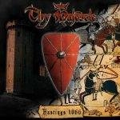

|
|
||
Thy Majestie : Hastings 1066 (2002) |
|

http://www.thymajestie.com |
1. Rerum Memoria 3:00 |
9.3/10 |
|
Hastings 1066 es el segundo disco de la banda italiana de power metal épico Thy Majestie. Antes de que nadie se lleve las manos a la cabeza gritando "¡no, otro mal clon de Rhapsody!" os diré que efectivamente el estilo de Thy Majestie está muy cercano al de Rhapsody pero que de ninguna manera se les puede considerar malos. De hecho, y junto con los discos en solitario de Luca Turilli, y quizás alguno de Vision Divine y Secret Sphere, esta banda es de las pocas que pueden acompañar a Rhapsody como iguales en el Olimpo de las bandas italianas de power metal sinfónico. El disco es conceptual y sus canciones están basadas en la batalla que tuvo lugar en la localidad inglesa de Hastings el 14 de Octubre de 1066 entre el duque Guillermo de Normandía y el rey Haroldo II, último de la dinastía sajona en Inglaterra, y que decidió la posesión de Inglaterra para los normandos. El disco comienza con una intro de tres minutos, "Rerum Memoria", de comienzo sobrecogedor y final espectacular entre unos majestuosos coros que dan paso a "The King and the Warrior", una gran pieza, vertiginosa, a doble bombo, con coros épicos y largo solo de guitarra. Una pequeña intro de estilo celta, nos conduce a la cuarta pista, "Echoes of War", otra gran canción, más lúgubre, un pelín recargada en las voces, incluyendo voces femeninas y distintos coros, en varias capas, con buenos contrastes y constantes cambios de ritmo, y solos de teclados y de guitarra. "The Sight of Telham Hill", tras un comienzo instrumental de sonido medieval, nos devuelve el doble bombo, un estribillo muy logrado, más voces femeninas y una fantástica parte central instrumental acompañada de coros y hecha para la narración de una epopeya. "Incipit Bellum" es un elaborado interludio instrumental, con coros y voces femeninas. Tras otro interludio instrumental, el octavo corte es "The Scream of Taillefer", con cambios de ritmo, coros, variedad en las voces y un buen estribillo. Una pequeña pieza instrumental, que crea una gran atmósfera, da paso a "Anger of Fate", que contiene algunos gloriosos coros clásicos, ambiente algo lúgubre, y partes lentas. "The Pride of a Housecarl", precedida de otra corta canción instrumental, aparece de nuevo salpicada con coros clásicos, pero con algunas partes de metal más directo, y solos de teclado y guitarra. La decimotercera pieza, "Through the Bridge of Spears", es otro gran ejemplo de como combinar voces, coros, teclados y guitarras eléctricas, culminándolo todo con un pegadizo estribillo. El disco termina con "Demons on the Crown", coros sobre el doble bombo, teclados muy presentes, delicadas voces femeninas, complejas partes instrumentales y melodía fantástica. Este disco es realmente muy bueno. La complejidad y la elaboración de cada una de las canciones es sobresaliente, y cómo la banda une todos los recursos a su disposición, lo que incluye hasta diez voces invitadas (masculinas y femeninas), en forma de coros, capas de voces, variedad de sonidos sintetizados, solos de teclado y de guitarra etc. en cada uno de los temas denota un enorme trabajo. La única falta que se le puede poner a este disco, y es una falta leve, es la voz de Dario Grillo, que a veces no consigue emerger entre el mar de coros, voces e instrumentos, y que desluce un poquito el trabajo final, aunque por ejemplo en Anger of Fate hace un trabajo bastante destacado. |
||
Rubén Béjar |
||